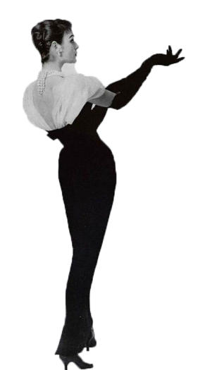
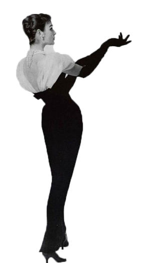

В номерах журнала Vogue за 1950 год заголовки рубрик сквозные. В январском номере большая часть заметок из раздела «Мода» посвящена модной ретроспективе 1900–1949 годов. Есть отдельные подборки, посвященные отдельно красной обуви и отдельно — синей. А в номере, увидевшем свет ровно 70 лет назад (15 апреля 1950), практически каждый заголовок в разделе «Мода» призывает... задуматься.
Задуматься, чтобы принять решение.
Итак, о чем думаем? О смене прически, о платьях без рукавов и летних пальто, о том, носить ли белый цвет в городе; о джемперах и о том, уместны ли составные образы вечером. Целых 6 заметок начинаются с подобного призыва.
Задолго до того, как в Vogue пришли влиятельные женщины вроде Грейс Коддингтон и Анна Винтур, им управляла Эдна Вулмен Чейз. Она проработала дольше всех главных редакторов, с 1914 по 1952 год. Эдна сделала из скромной еженедельной газеты о моде всемирно известное глянцевое издание, каким оно является сегодня.
Чейз состояла в государственном комитете и занималась модернизацией женской военной формы, всегда помогая женщинам выглядеть безупречно независимо от уровня дохода и социального положения.
Главный редактор модного издания организовала первый
в Америке показ мод. Она публиковала фотографии элегантно одетых представителей высшего общества и способствовала продаже одежды.
 
